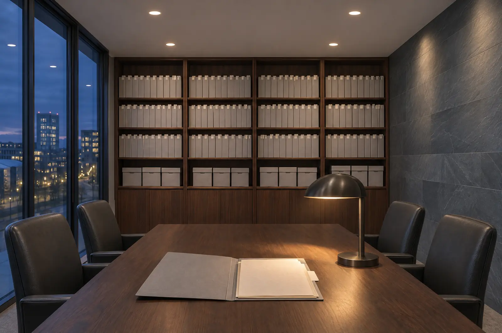
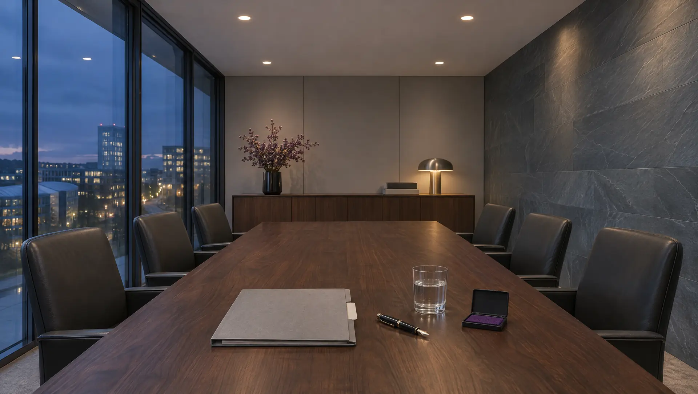
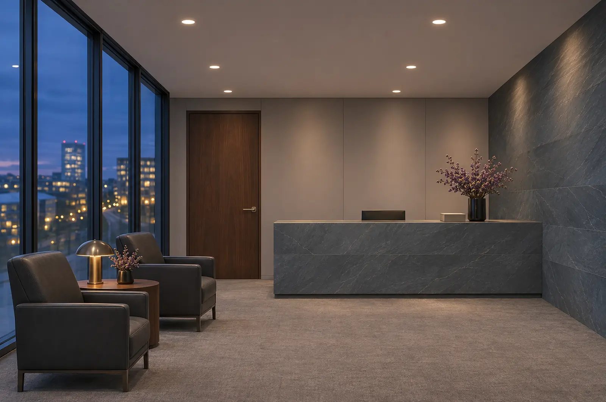
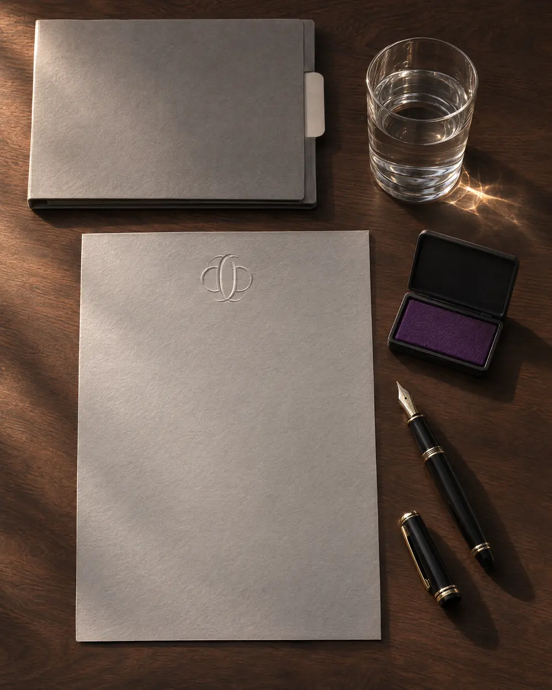

01 · Dossier ouvert
Contentieux des affaires
Situations typiques
À apporter au premier rendez-vous
Clara WenAssociéeFR · EN · ZH

Ashcombe Lorant, avocats d'affaires au Kirchberg. Tirez le dossier qui vous ressemble : l'associé qui le tient, les situations qu'il couvre, ce qu'il faut apporter au premier rendez-vous.
Perquisition, convocation ? Ligne d'urgence pénale, soir et week-end : +352 621 00 00 00
01 · Dossier ouvert
Clara WenAssociéeFR · EN · ZH
Chaque demande suit le même bordereau. Un tampon par étape, et vous savez toujours où en est votre dossier.
Pas dans une boîte commune. L'associé du domaine le lit et vous répond dans la journée ouvrée pour fixer un premier échange.
Avant tout échange sur le fond, on s'assure que le cabinet ne conseille pas l'autre partie. C'est pour cela que le formulaire demande son nom.
Au cabinet, en visio ou au téléphone. On repart avec les questions qui comptent, pas avec un exposé du droit.
Chaque option, son calendrier, ses risques et les honoraires correspondants. Vous décidez avec tout sous les yeux, et rien n'est facturé sans votre accord.
Celui ou celle qui vous reçoit au premier rendez-vous suit le dossier jusqu'au bout.
Aucun associé ne réunit ces deux critères.

On ne croise personne en salle d'attente. Les rendez-vous sont espacés, les salles insonorisées, et les dossiers ne quittent pas l'étage.


Tout ce que vous écrivez ici est couvert par le secret professionnel dès l'envoi, même si vous ne nous confiez pas l'affaire. Quelques lignes suffisent : les détails viendront au rendez-vous.
Votre pli est scellé.
Référence